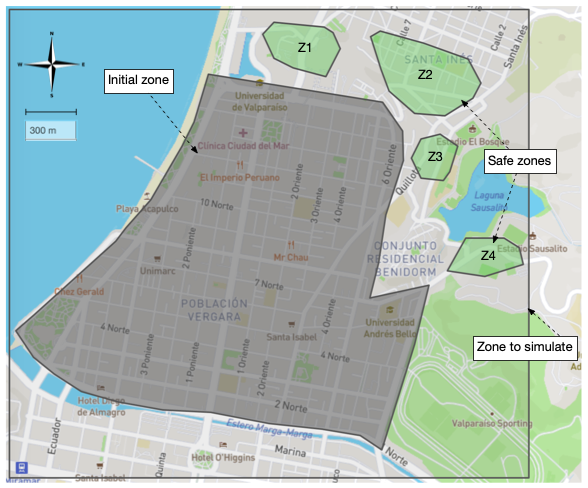
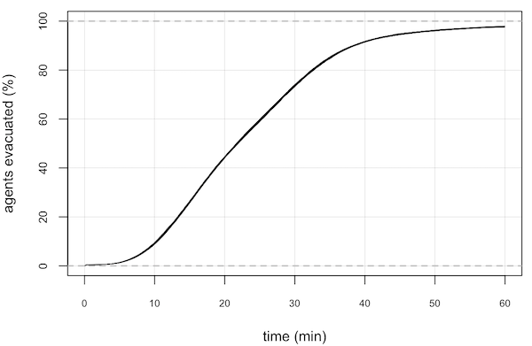

Descripción del escenario

Figura 1: Sector "Población Vergara" de la ciudad de Viña de Mar. La zona gris representa la zona inicial donde los agentes son asignados. Las áreas verdes representan las zonas seguras.
Figura 1: Sector "Población Vergara" de la ciudad de Viña de Mar. La zona gris representa la zona inicial donde los agentes son asignados. Las áreas verdes representan las zonas seguras.
El escenario de evacuación de este ejemplo es el sector norte de la ciudad de Viña del Mar, de 4 km2. La zona inicial (color gris) donde se ubican los agentes abarca aproximadamente 4 km 2. Las zonas seguras (Z1, Z2, Z3 y Z4) están representadas por áreas de color verde. Se simulan 33000 personas, de los cuales, 30000 son Residentes y 3000 son Visitantes. Éstos últimos, cuando son creados, no conocen la ubicación de las zonas seguras. Desde el punto de vista de la simulación, se denominan Visitantes tipo II. Sin embargo, estos agentes pueden determinar una zona segura siguiendo a grupos de agentes que avanzan en la misma dirección. Cuando sucede esto, un Visitante tipo II se transforma en un Visitante tipo I.
| Parámetro | Valor | Unidades | Observación |
|---|---|---|---|
| Residentes | 30000 | personas | |
| Visitantes | 3000 | personas | |
| σ | 383 | segundos | Disperción del tiempo de salida de las personas (Variable aleatoria Rayleigh). |
| Tiempo de simulación | 3600 | segundos | |
| Cantidad de experimentos | 30 | ||
| Grupo etáreo G0 | 17% | Porcentaje de personas | Según datos del censo 2017 |
| Grupo etáreo G1 | 26% | Porcentaje de personas | Según datos del censo 2017 |
| Grupo etáreo G2 | 43% | Porcentaje de personas | Según datos del censo 2017 |
| Grupo etáreo G3 | 14% | Porcentaje de personas | Según datos del censo 2017 |
Animación de la simulación
La animación de uno de los experimentos realizados se puede visualizar haciendo click en la Figura 2. Los códigos de color para los agentes se resumen en la Tabla 2.
| Tipo de agente | Color | Observación |
|---|---|---|
| Residente | Rojo | Representa a personas que conocen cómo llegar a las zonas seguras |
| Visitante tipo II | Azul | Representa a personas en tránsito que no han logrado determinar cómo llegar a las zonas seguras |
| Visitante tipo I | Amarillo | Representa a personas en tránsito que han logrado determinar cómo llegar a las zonas seguras |
Top
Resultados
| Variable | Valor | Unidades | Observación |
|---|---|---|---|
| Evacuados | 32276 ± 15 (97.8%) | personas | |
| No evacuados | 724 ± 15 (2.2%) | personas | |
| 50% evacuados | 21.5 / 21.8 / 22.2 (min / prom / max) |
min | Tiempo necesario para evacuar al 50% de la población. |
| 75% evacuados | 30.3 / 30.6 / 30.8 (min / prom / max) |
min | Tiempo necesario para evacuar al 75% de la población. |
La Figura 3 muestra el porcentaje de personas evacuadas a medida que transcurre el proceso de evacuación.

Figura 3: Cumulative porcentage of agents evacuated.
Figura 3: Cumulative porcentage of agents evacuated.
Además, los datos entregados por el simulador permiten determinar a qué distancia de las zonas de seguridad se ubican los agentes que no logran evacuar, diferenciados por tipo (Residente, Visitante tipo I, Visitante tipo II) y por rango etáreo. Los Visitante tipo I son aquellas personas que están de paso por la ciudad y logran determinar hacia dónde hay que evacuar y los Visitante de tipo II son los que están de paso y no logran determinar hacia donde dirigirse. Inicialmente, todos los agentes visitantes son del tipo II y según la dinámica de la evacuación y su interacción con el resto de los agentes, pueden pasar a ser el tipo I.
Figura 4: Distance to the centroid of safe area
for non-evacuated Residents by Group Age.
Figura 5: Distance to the centroid of safe area
for non-evacuated Visitors (type I) by Group Age.
Figura 6: Distance to the centroid of safe area
for non-evacuated Visitors (type II) by Group Age.